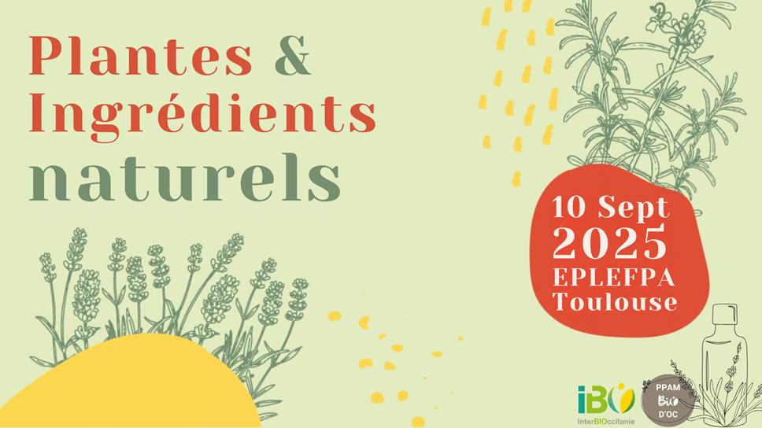

28
03
Salon des Plantes aromatiques et Médicinales et autres ingrédients naturels.
e 10 septembre 2025, rencontre avec les producteurs et entreprises de cette filière émergente mais très dynamique en Occitanie ! Une initiative de l’Interbio-Occitanie...
+ LIRE LA SUITE

28
03
Markstein : l'arnica cultivé à la rescousse du sauvage
L'arnica sauvage n'a pas fleuri dans le Markstein (massif des Vosges) pendant près de quatre ans...
+ LIRE LA SUITE
28
03
Une expo Cueillettes à Salagon
Le séminaire d'ethnobotanique de Salagon (Alpes de Hautes Provence) se tiendra du 2 au 4 octobre sur le thème des "nouvelles rencontres avec la plante"...
+ LIRE LA SUITE
- 1
- 2
- 3
- 4
- 5